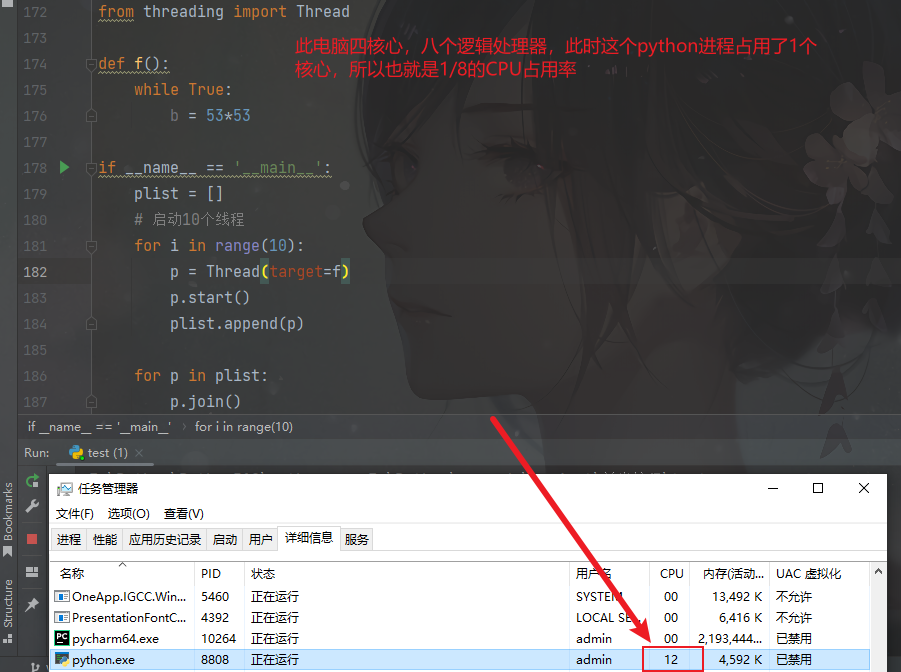
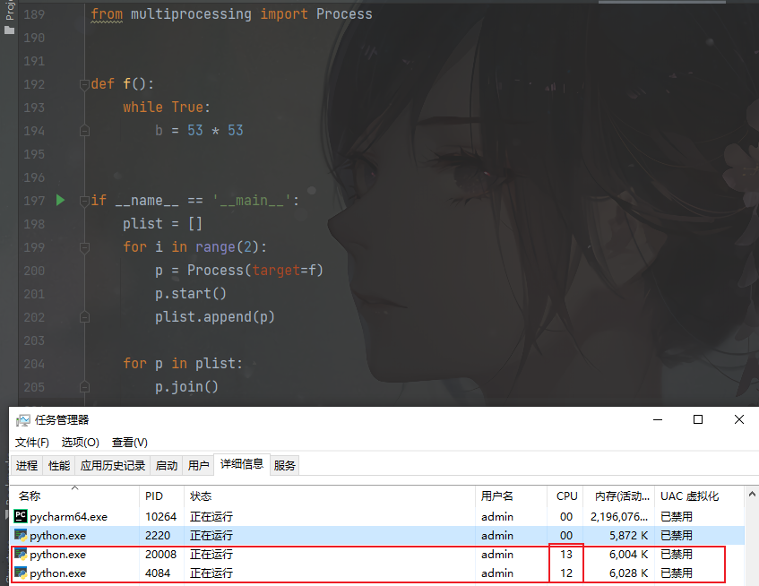

摘要: 程序如何提升速度？
① 单线程串行：由CPU 和 IO 轮流执行；② 多线程并发（threading）③ 多CPU 并行（multiprocessing）④ 多机器并行；
并发编程
操作系统发展史
操作系统的发展史，本质上就是不断地提高CPU利用率的过程
多道技术
单核实现并发的效果
1.I/O的操作（输入，输出，网络传输）
2.计算数据
串行
根据顺序，依次执行，CPU的利用率非常低
并发和并行
- 并发
看起来像是在同时执行，就叫做并发
- 并行
实际上的确在同时执行，就叫做并行
所以，并行一定可以叫做并发，但是并发不一定叫做并行
- 串行和并行
复用
- 空间上的复用
多个应用程序共用一套硬件
- 时间上的复用
在同一时间，同时做着很多事情：点外卖，洗衣服，学习
cpu是如何切换的
1.I/O操作的时候，主动释放CPU的使用权限
2.长时间占用，剥夺CPU的使用权限
进程的调度
进程与程序的区别
程序是死的，进程是活的
- 程序
程序实际就相当于一大段功能代码的集合
- 进程
进程指的就是程序实际执行的过程
进程调度
当多个进程同时执行时，需要分配CPU的资源，而这个分配过程不是随机的，而是遵循一定的规则，那这个规则就需要进程的调度算法
- 先来先服务调度算法：对长作业有利
- 短作业优先调度算法：对短作业有利
- 时间片轮转法+多级反馈队列
进程与线程概述
进程和线程的概念
- 进程指的就是程序执行的过程，线程是进程工作的最小单位
假设应用程序相当于是一个工厂（生产东西-数据的），此时进程就相当于是工厂的车间，而线程就相当于是车间的工人，因此每个进程最少要存在一个线程
此时如果我们想要提高生产效率：1.扩车间 2.每个车间增加工人
进程和线程分别是在什么的基础上创建出来的？
进程是在程序的基础上申请额外的内存空间
线程是在进程的基础上增加线程
因此进程是比线程消耗资源更多的方式
初识多进程、多线程
- 多线程
1 | import time |
- 多进程
1 | import time |
进程的创建
1 | import time |
- join方法
通过该方法，可以让主进程等待子进程结束之后再执行
1 | import time |
问题：在使用join方法时，如果让多个子进程同时执行
1 | import time |
进程互斥锁
- 当多个进程同时操作一份数据时，会出现数据错乱的情况
1 | import json |
- 解决办法：添加互斥锁：就是将原有的并行变成串行，牺牲了执行效率，但是保护了数据安全
1 | import json |
进程之间数据互相隔离
1 | from multiprocessing import Process |
线程的创建
1 | from threading import Thread |
通过这个例子可以看到，通过多线程的方式没有办法提高程序的执行效率，没有缩短程序的执行时间，这是因为有GIL锁的存在
GIL锁
- GIL锁其实是CPython当中设计的一个功能，它的目的就是让一个进程当中同一时间最多只有一个线程能被CPU调度
- 什么时候使用多进程，什么时候使用多线程？
GIL锁让多线程丧失了多核优势，但是保证了数据安全
但并不是因为这样，多线程就没有了意义
==I\O密集型：使用多线程，更多的文件存取，更多的网络传输==
==计算密集型：使用多进程，计算大量的数据==
同个进程的线程数据共享
1 | from threading import Thread |
1 | from threading import Thread |
线程互斥锁
1 | import time |
1 | import time |
并发的实现网络编程
- server
1 | import socket |
- client
1 | import socket |
多线程开发
相关方法
start()
线程准备就绪，等待CPU的调度（并不是说线程开始执行的意思，只是准备好了，具体什么时候执行，要看CPU具体的调度）
join()
等待当前的线程执行完毕，再接着向下执行
1 | import time |
- os.getpid()
1 | import os |
current_thread()
.name 获得当前性能名称
1 | def func(): |
- active_count() 查出当前进程有多少个线程在执行
1 | def func(): |
线程池
1 | def func(num): |
补充
主线程等待子线程
1 | print("主线程执行代码") |
共享数据的访问控制
- 多线程没有加锁
- 结果不正常
1 | from threading import Thread |
- 单线程运行
- 结果无误
1 | from time import sleep |
- 多线程加锁
- 结果正确运行
1 | from threading import Thread,Lock |
Lock 对象的acquire方法 是申请锁。
每个线程在 操作共享数据对象之前，都应该 申请获取操作权，也就是 调用该 共享数据对象对应的锁对象的acquire方法。
如果线程A 执行如下代码，调用acquire方法的时候，
1 | bankLock.acquire() |
别的线程B 已经申请到了这个锁， 并且还没有释放，那么 线程A的代码就在此处 等待 线程B 释放锁，不去执行后面的代码。
直到线程B 执行了锁的 release 方法释放了这个锁， 线程A 才可以获取这个锁，就可以执行下面的代码了。
如果这时线程B 又执行 这个锁的acquire方法， 就需要等待线程A 执行该锁对象的release方法释放锁， 否则也会等待，不去执行后面的代码。
多进程
Python 官方解释器 的每个线程要获得执行权限，必须获取一个叫 GIL （全局解释器锁） 的东西。
这就导致了 Python 的多个线程 其实 并不能同时使用 多个CPU核心。
所以如果是计算密集型的任务，不能采用多线程的方式。
大家可以运行一下如下代码
1 | from threading import Thread |

如果需要利用电脑多个CPU核心的运算能力，可以使用Python的多进程库，如下
1 | from multiprocessing import Process |
运行后，打开任务管理器，可以发现 有3个Python进程，其中主进程CPU占用率为0，两个子进程CPU各占满了一个核心的运算能力。
